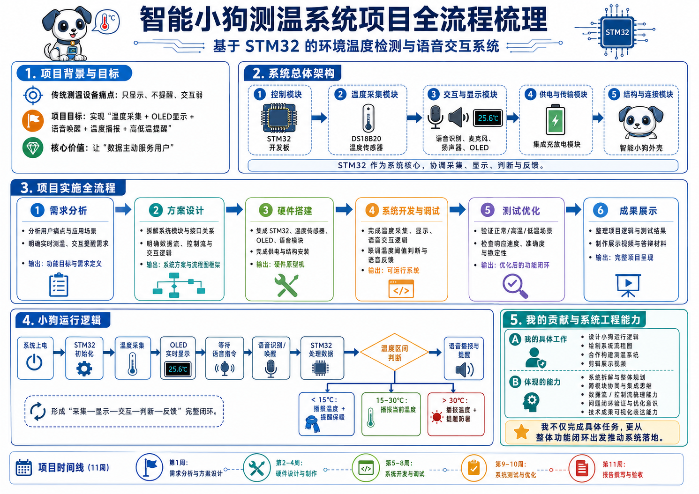

项目名称
基于 STM32 的智能小狗环境测温与语音交互系统。项目成果为一个可正常运行的智能小狗温度检测原型机，可完成温度采集、语音控制与语音反馈等功能。
Embedded System · Automation · v1.2
基于 STM32 的智能小狗环境测温与语音交互系统，将温度采集、OLED 显示、语音唤醒、温度播报和高低温提醒整合成完整的信息反馈闭环。
Project Demo
System Flow

Project Workflow Overview
本项目围绕传统测温设备“只显示、不提醒、交互弱”的痛点，设计具有实时测温、OLED 显示、语音唤醒、温度播报和高低温提醒功能的智能小狗测温装置。核心目标是将单一温度数据转化为更具场景感和互动性的反馈体验，实现“数据主动服务用户”的智能感知模式。
基于 STM32 的智能小狗环境测温与语音交互系统。项目成果为一个可正常运行的智能小狗温度检测原型机，可完成温度采集、语音控制与语音反馈等功能。
项目初期先从用户需求和传统设备缺陷出发：传统环境温度检测设备通常只能被动显示温度，用户需要主动查看数值，当温度过高或过低时也缺少及时提醒，容易造成信息被忽略。
系统被拆分为控制模块、温度采集模块、交互与显示模块、供电与传输模块、结构与连接模块五个部分。STM32 开发板作为系统核心，协调传感器、OLED、语音识别、扬声器、麦克风和供电模块运行。
我在项目中重点负责小狗运行逻辑设计和流程图绘制，从系统运行链路出发梳理完整闭环。
运行逻辑可以概括为一条从感知到反馈的信息流：
我负责将抽象功能转化为清晰流程图，展示设备从上电到反馈的完整路径，并明确模块之间的数据流向和控制关系，降低硬件搭建、程序开发和展示讲解之间的信息差。
硬件系统由 STM32F103C8T6 微控制器、DS18B20 温度传感器、SU03T 语音识别芯片、麦克风、扬声器和 OLED 屏幕组成。我的工作重点是保证运行逻辑与实际硬件功能一致，让采集、显示、唤醒、播报和提醒真正协同。
项目最终实现唤醒后 1 秒内反馈、温度检测范围 -10℃ 至 85℃、误差约 ±0.5℃ 的预期性能目标。
在成果展示阶段，我负责剪辑展示视频，将项目功能、设备运行逻辑和实际测试效果进行可视化呈现。视频重点展示上电启动、OLED 实时显示、语音唤醒、温度播报、高温提醒和低温提醒等场景。
这部分工作不仅是简单剪辑，而是对项目成果进行系统化表达：需要理解整个系统的工作逻辑，再将其转化为观众容易理解的展示节奏，突出趣味化外观、语音交互、实时反馈和温度异常提醒。